모두의 AI 가속기
Tenstorrent Blackhole
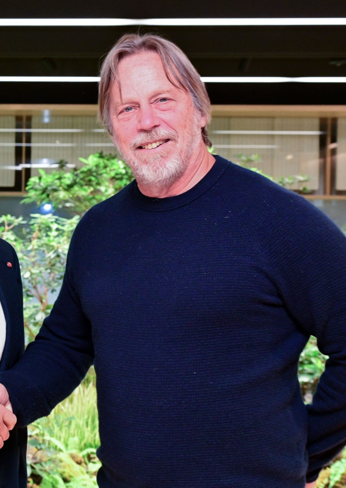
Jim Keller


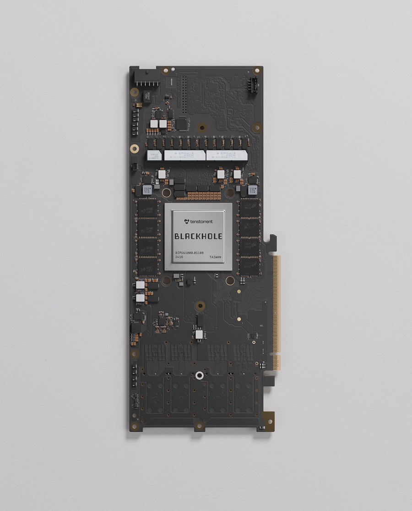
$999
28 GB GDDR6 · 448 GB/s
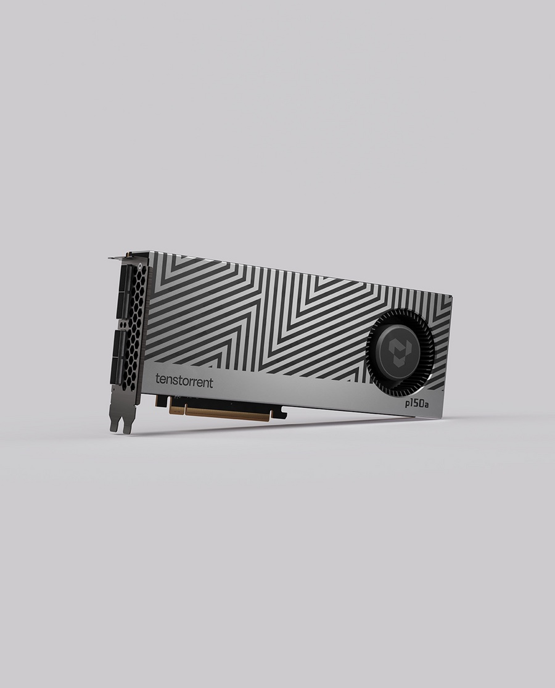
$1,399
32 GB GDDR6 · 512 GB/s
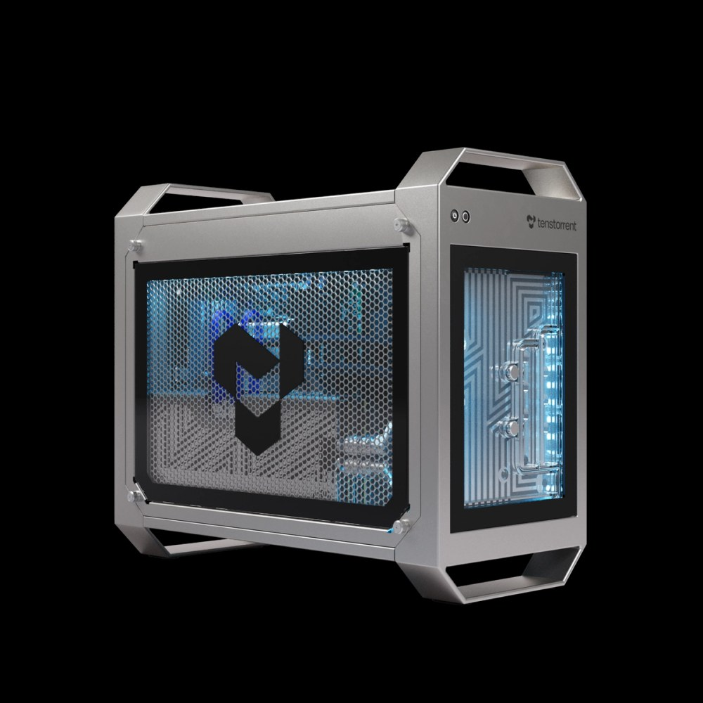
$9,999
Ryzen CPU · 256 GB DRAM
128 GB AI RAM (4 chip)
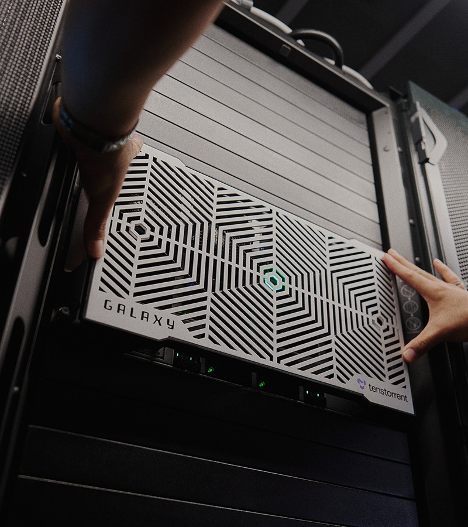
$160k
1 TB AI RAM (32 chip)
모든 소프트웨어 스택이 오픈소스
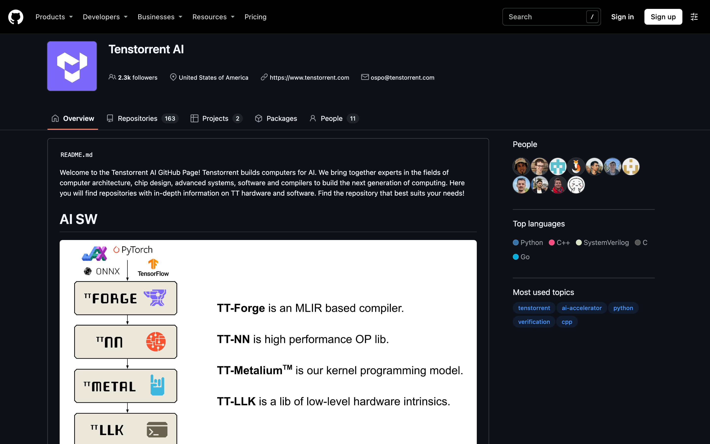
Claude · GPT 에서 skill 로 바로 다룬다
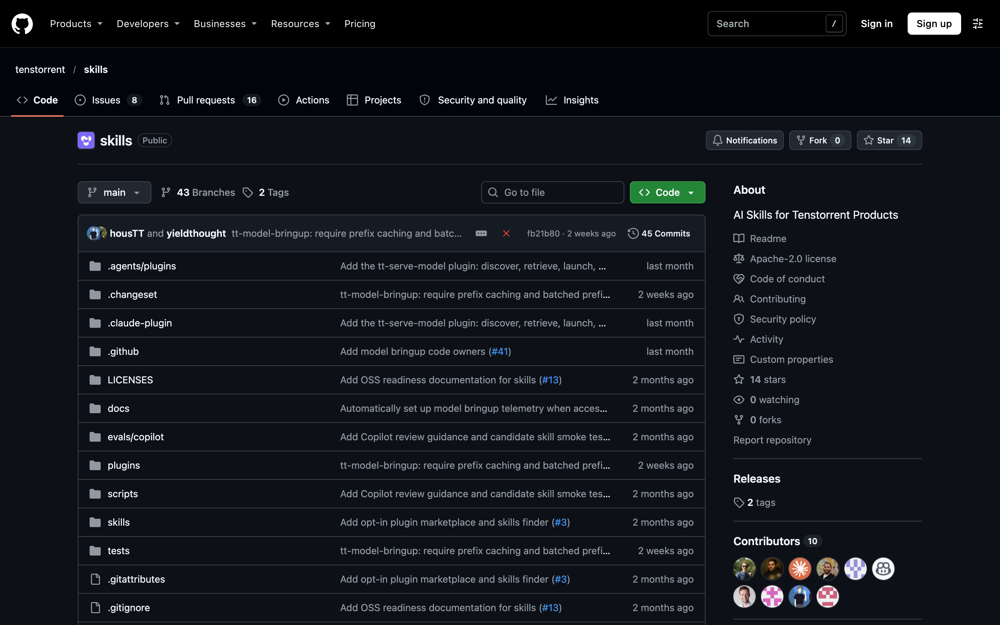
Day-0 model support
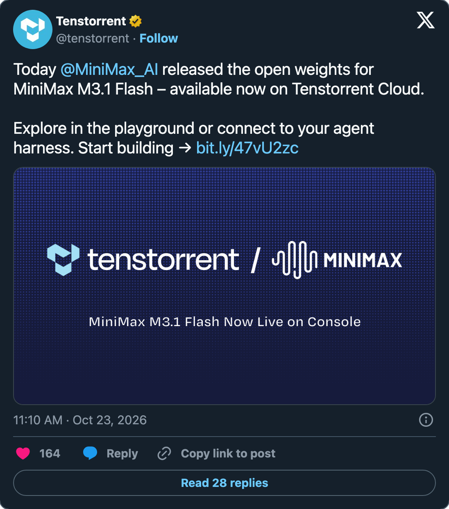
18시간만에 대형 모델 포팅 + 최적화 + OpenRouter 서빙.
글로벌 1위 성능
LLM (서버)
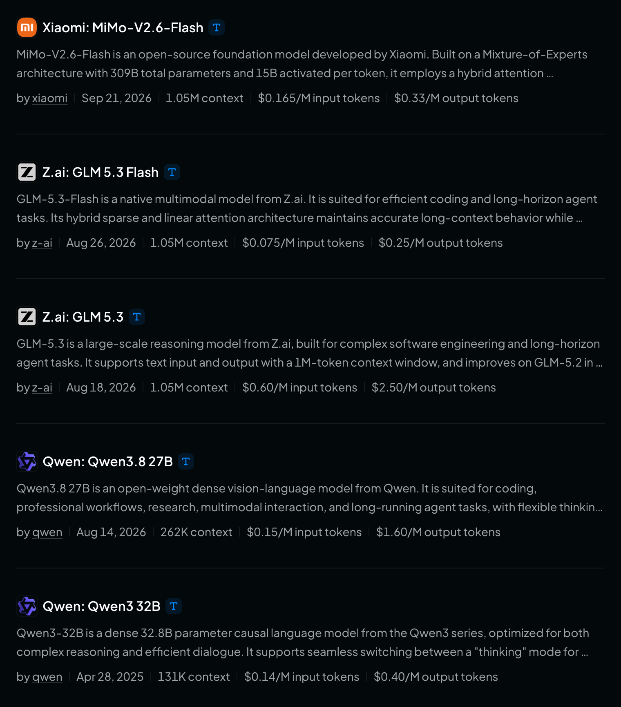
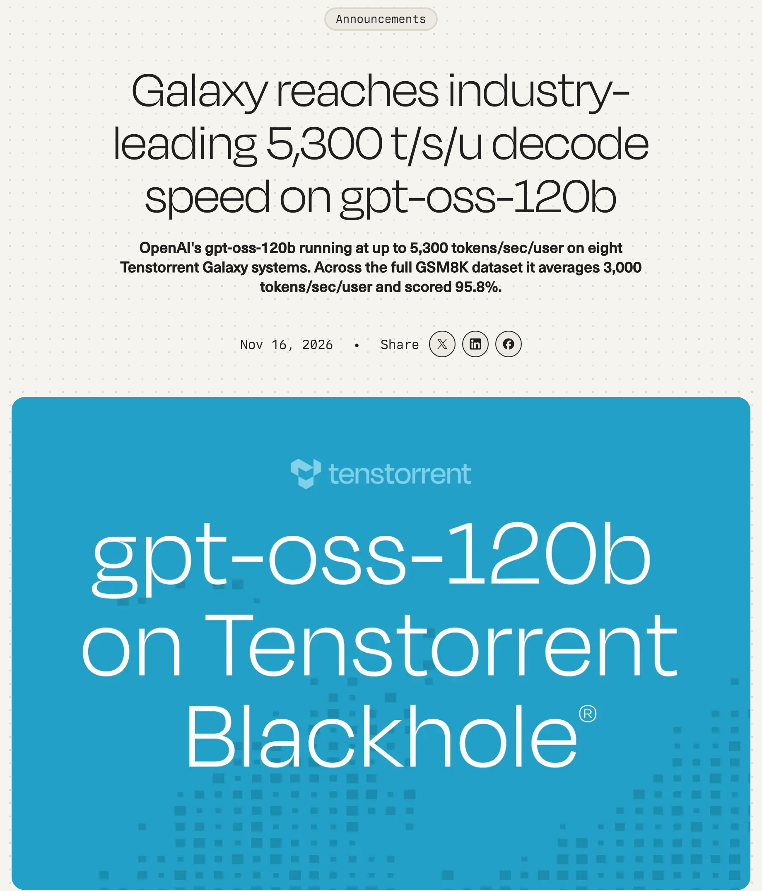
LLM (서버)
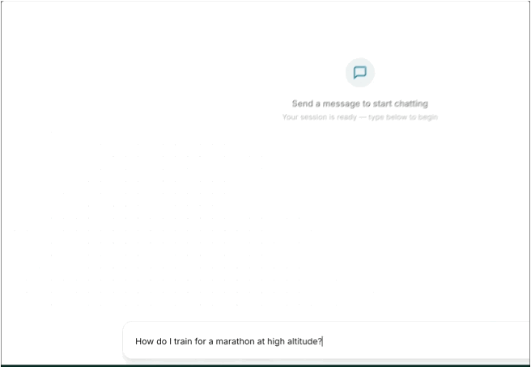
LLM (카드)
Gemma4-31B, Qwen3.8-27B (bf16)
100–200 t/s/u
Physical AI (Robotics)
Physical AI (Autonomous Driving)
생성형 AI
그 외로... 모든게 다 됩니다
Graphics 연산 지원
로보틱스 학습 구현
rsl_rl / rl_games 포팅 완료로보틱스 + 물리 시뮬레이터 구현
MJWarp 시뮬레이터 가속, 물리엔진 포팅 완료